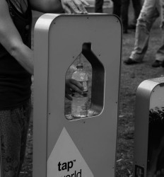

The How Page: Strategies for Achieving Universal Design in Web Development
Designing universally is not a distant ideal but a tangible goal that can be realized through a thoughtful integration of principles, technologies, and best practices. Here's a detailed exploration of how we can achieve universal design in web development.
Responsive Web Design (RWD)
Implementing responsive web design is foundational to universal design. RWD ensures that interfaces adapt seamlessly to various devices and screen sizes, catering to users with diverse preferences in terms of devices and platforms.
Semantic HTML Markup
Utilize semantic HTML tags to structure content in a meaningful way. Semantic markup enhances accessibility for users relying on screen readers and other assistive technologies, ensuring that the content is well-understood and navigable.
Accessible Forms and Controls
Design forms and interactive controls with accessibility in mind. Include labels, provide meaningful error messages, and ensure that all interactive elements are operable via keyboard input, catering to users with motor disabilities or those who rely on screen readers.
Color Contrast and Readability
Pay meticulous attention to color contrast to make content legible for users with visual impairments. Ensure that text and interactive elements have sufficient contrast ratios, and avoid relying solely on color to convey information.
Alternative Text for Images
Integrate descriptive alternative text (alt text) for all images. Alt text serves as a textual alternative for users who cannot perceive visual content, contributing to a more inclusive experience for individuals with visual impairments.
Keyboard Navigation
Ensure that all functionalities and interactive elements can be accessed and operated using a keyboard alone. Keyboard navigation is crucial for users with motor disabilities who may not be able to use a mouse effectively.
Provide Transcripts and Captions
Include transcripts for multimedia content, such as videos and podcasts, and add captions for audio content. This benefits users with hearing impairments and provides an alternative means of consuming information.
Readable Fonts and Scalable Text
Opt for readable fonts and allow users to scale text based on their preferences. Consider users with visual impairments who may require larger text sizes for comfortable reading.
User Testing with Diverse Audiences
Conduct thorough user testing with individuals representing diverse abilities and backgrounds. Actively seek feedback from users with disabilities to identify potential barriers and refine the design accordingly.
ARIA (Accessible Rich Internet Applications) Roles
Leverage ARIA roles to enhance the accessibility of dynamic and interactive content. ARIA provides additional information to assistive technologies, improving the overall experience for users with disabilities.
Focus on Inclusive Content Design
Embrace content design principles that prioritize clarity, simplicity, and inclusivity. Craft content that is easy to understand for users with cognitive disabilities or those with varying levels of literacy.
Incorporate Voice Commands
Explore the integration of voice command functionalities, allowing users to navigate and interact with the interface using voice inputs. This accommodates individuals with mobility or dexterity impairments.
Continuous Education and Awareness
Foster a culture of continuous education and awareness within the development team. Stay informed about evolving accessibility standards and best practices to ensure that the latest advancements are incorporated into the design process.
Compliance with Accessibility Standards (WCAG)
Adhere to established accessibility standards, such as the Web Content Accessibility Guidelines (WCAG). These standards provide a comprehensive framework for creating accessible web content and applications.
Engage with Accessibility Tools
Utilize accessibility tools and validators to assess the compliance of the design with accessibility standards. These tools can identify potential issues and guide developers in making necessary improvements.
Conclusion
By embracing these technical strategies and weaving them into the fabric of the design process, we pave the way for a more universally accessible digital landscape. Universal design becomes not just a goal but a realized commitment, ensuring that the web is a space where every user, regardless of ability, can navigate, interact, and engage seamlessly.